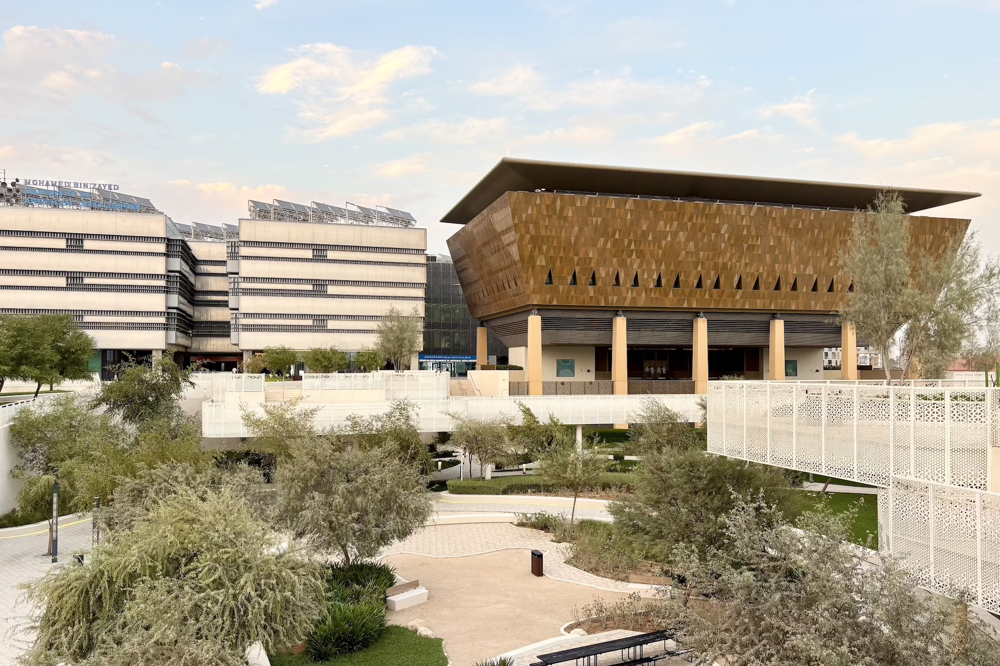
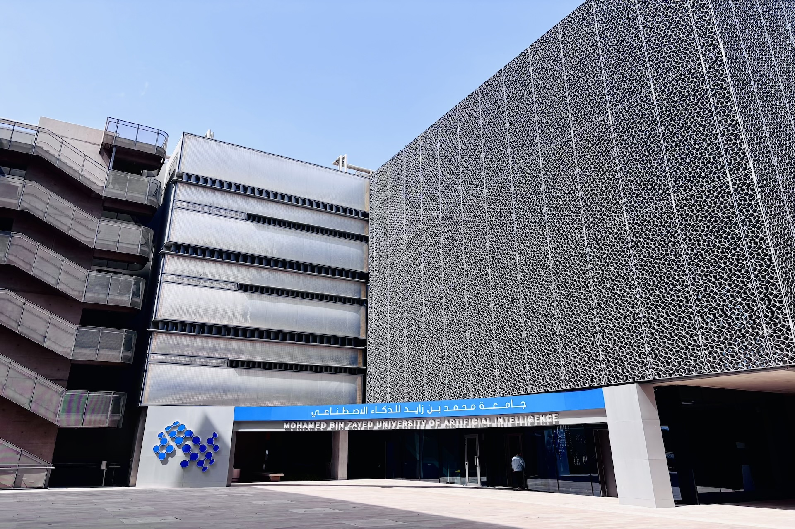

Welcome to the AIRoCS Laboratory
Intelligent robotics and control systems — from safe learning theory to real-world deployments.

MBZUAI · Abu Dhabi
Situated in Masdar City, collaborating across AI and robotics communities.

MBZUAI · Abu Dhabi
Situated in Masdar City, collaborating across AI and robotics communities.